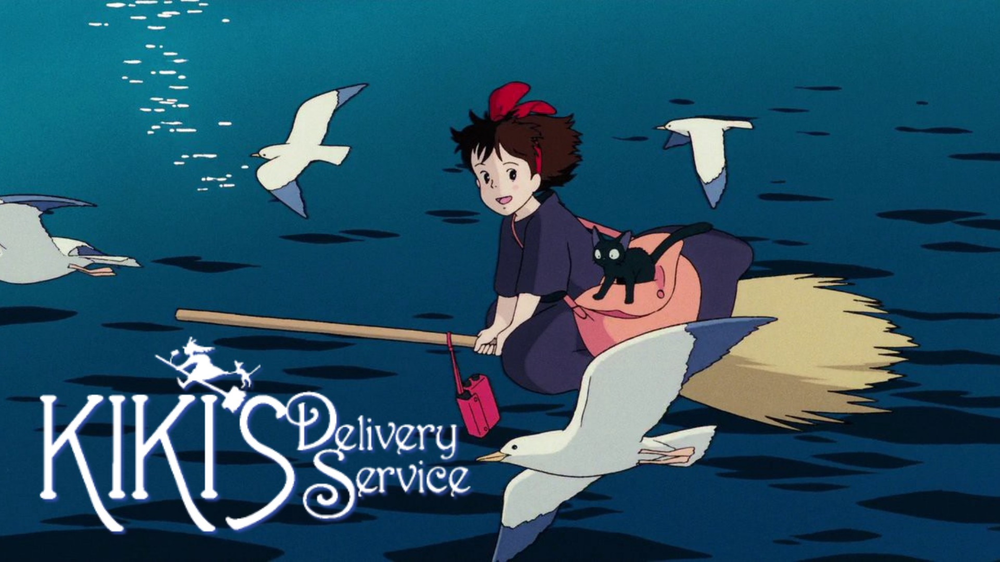

Leap Year
When yet another anniversary passes without a marriage proposal from her boyfriend,
Anna (Amy Adams) decides to take action. Aware of a Celtic tradition that allows women
to pop the question on Feb. 29, she plans to follow her lover to Dublin and ask him to
marry her. Fate has other plans, however, and Anna winds up on the other side of the
Emerald Isle with handsome, but surly, Declan -- an Irishman who may just lead Anna down
the road to true love.
Kiki's Delively Service

In this anime feature, 13-year-old Kiki moves to a seaside town with her talking cat,
Jiji, to spend a year alone, in accordance with her village's tradition for witches
in training. After learning to control her broomstick, Kiki sets up a flying courier service
and soon becomes a fixture in the community. But when the insecure young witch begins questioning
herself and loses her magic abilities, she must overcome her self-doubt to get her powers back.
Daddy’s Home
Brad Whitaker (Will Ferrell) is a kindhearted radio executive who wants to be the best possible
stepfather to his wife's (Linda Cardellini) two children. When her freewheeling ex-husband, Dusty
(Mark Wahlberg), breezes back into town, Brad's feeling of insecurity quickly develops into an inferiority
complex. As Dusty demonstrates his flair for athletics, home repair and bad-boy charisma, Whitaker finds
himself in a no-holds-barred battle to one-up his rival and win the approval of his family.